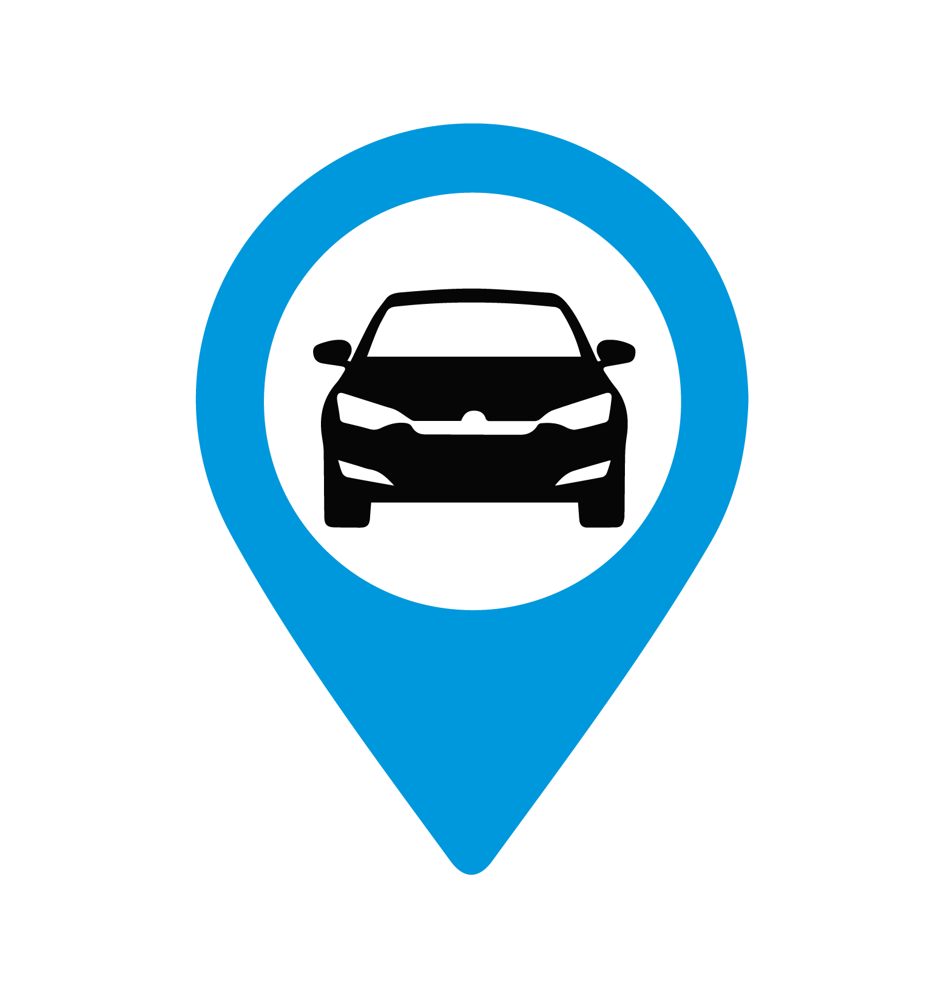
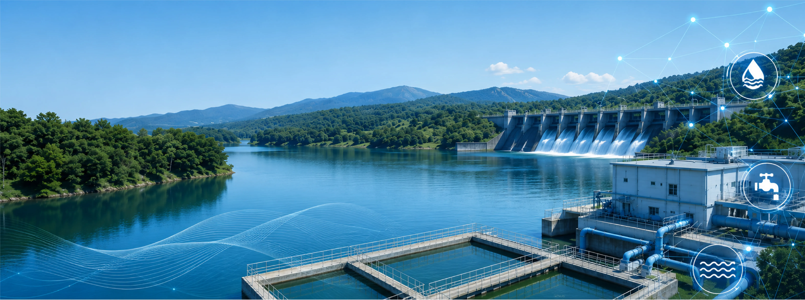
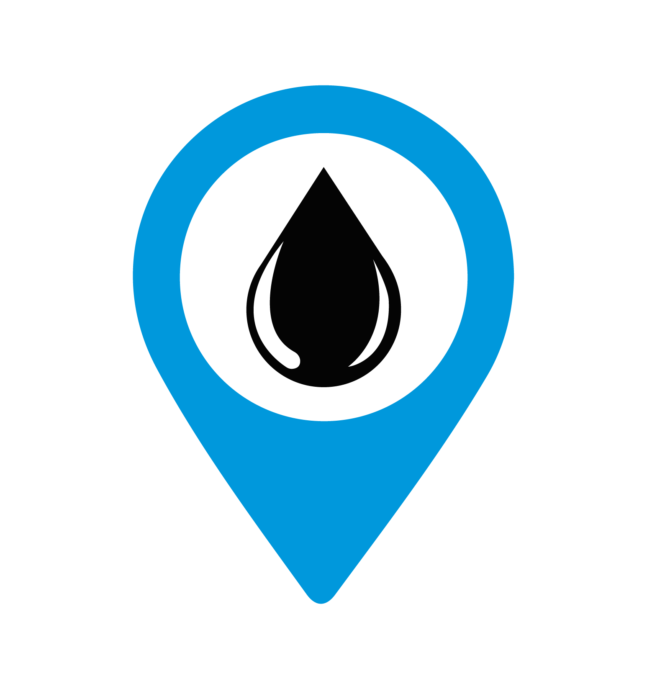
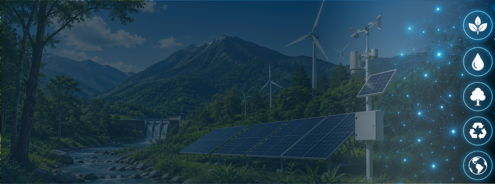
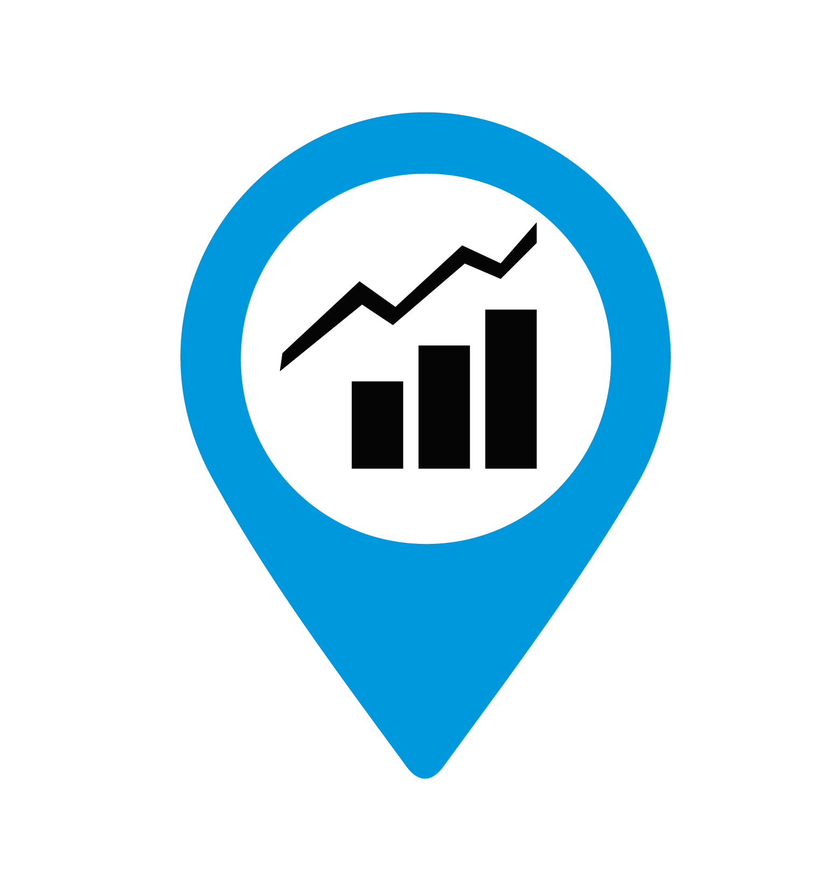

Desarrollo Urbano y Catastro
Planeación y ordenamiento inteligente del territorio urbano para garantizar la cobertura eficiente de servicios públicos.
- layersPlanes de desarrollo urbano
- layersActualización catastral


Estaciones de Servicio
Solución integral para el análisis territorial de infraestructura energética, maximizando rentabilidad y reduciendo riesgos operativos.
- layersEvaluación de apertura e inversión
- layersVerificación de permisos CRE
Minería
Inteligencia territorial para todo el ciclo de vida minero, desde la exploración hasta la gestión sostenible de recursos.
- layersProspección geológica
- layersEvaluación de impacto ambiental
Infraestructura Pública
Planeación estratégica y análisis multicriterio para el desarrollo de proyectos de obra pública de gran escala.
- layersEstudios de factibilidad geoespacial
- layersManifestación de Impacto Ambiental (MIA)

Movilidad Sustentable
Soluciones integrales para optimizar el desplazamiento mediante infraestructura inteligente y conectividad urbana.
- layersAnálisis origen-destino
- layersPlaneación de electromovilidad


Vialidades y Transporte
Modelos geoespaciales y de tráfico para mejorar la circulación, reducir tiempos y optimizar redes viales.
- layersIngeniería de tránsito y aforos
- layersOptimización de intersecciones

Seguridad Pública y Privada
Geointeligencia aplicada para la prevención del delito, monitoreo territorial y protección de derechos ciudadanos.
- layersMapas de incidencia delictiva
- layersDiseño de centros C4/C5


Agua y Recursos Hidráulicos
Planeación para el aprovechamiento sustentable y gestión del ciclo de vida de ecosistemas hídricos.
- layersProyectos ejecutivos hidráulicos
- layersGestión de cuencas

Medio Ambiente Natural
Estudios de impacto y ordenamiento ecológico para proteger, restaurar y aprovechar los recursos naturales.
- layersMIA y ordenamiento ecológico
- layersInventario de recursos naturales
Evaluación de Riesgos
Identificación y mitigación de amenazas naturales, antropogénicas y operativas para prevenir desastres.
- layersAtlas de riesgos y protección civil
- layersZonificación por riesgo potencial

Desarrollo Social y Humano
Análisis demográfico y cualitativo para entender el bienestar y las dinámicas comunitarias del territorio.
- layersEvaluación de programas sociales
- layersCobertura de servicios básicos
Desarrollo Inmobiliario
Inteligencia territorial aplicada para maximizar la plusvalía y viabilidad de proyectos urbanos y comerciales.
- layersInvestigación de mercado y avalúos
- layersAnálisis de plusvalía proyectada
Geomarketing
Localización inteligente de clientes, puntos de venta y competidores para dominar el mercado.
- layersSegmentación espacial de mercado
- layersLocalización óptima de sucursales

Investigación Social
Georreferenciación de percepciones ciudadanas y dinámicas poblacionales para la planeación estratégica.
- layersBases de datos georreferenciadas
- layersSimuladores 3D y mapas geoestadísticos

Político Electoral
Analítica electoral y segmentación territorial para campañas y plataformas políticas basadas en datos.
- layersDistritación técnica y cartografía
- layersMarketing electoral-espacial

Sistema de Autogestión Colaborativa Inteligente (SACI)
Plataformas SaaS avanzadas para el monitoreo, colaboración y automatización de procesos territoriales en tiempo real.
- layersDashboards operativos interactivos
- layersAutomatización de procesos digitales
Diseño Arquitectónico e Ingeniería
Soluciones de ingeniería civil y diseño para proyectos preparados para Smart Cities.
- layersModelado BIM 4D
- layersInfraestructura IoT y telemetría
Gestión de Servicios Integrales
Coordinación operativa, monitoreo y mantenimiento para asegurar el ciclo de vida de la infraestructura.
- layersMantenimiento predictivo
- layersEvaluación de desempeño operativo

Energías Limpias
Soluciones energéticas sustentables para la transición y resiliencia territorial.
- layersEstudios de Impacto Ambiental
- layersDiagnóstico de Huella de Carbono